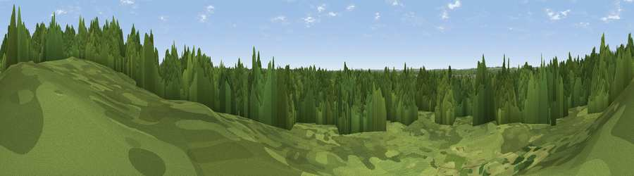

Lookout
#45918 in England · top 98% of its area beats it · near Ashley HeathWhere it is
The exact computed spot (SU 11143 06369). Click the marker for map links.
The view, rendered

A 360° render of this exact spot computed from the terrain model, tree cover and land cover — summer colours, afternoon light, calibrated against photographs of famous viewpoints. Real trees, hedges and buildings will differ in detail.
The panorama
Grey silhouette: terrain skyline in each direction (720 bearings, Earth curvature and refraction included). Dashed green: skyline with trees (+15 m) and buildings (+8 m) as obstacles. Blue strip: how far the ground is visible on each bearing.
Where the view opens
Wedge length = distance to the farthest visible ground on that bearing (vegetation-aware). Rings at 10, 25 and 50 km.
What fills the view
82% woodland · 15% grassland · 3% built-up ·
Angular shares of the visible panorama (visual magnitude), not map area. Landscape diversity 0.25 (0–1 Shannon).
Key numbers
More beautiful places nearby
The staircase of upgrades: each row has a higher view potential than everything closer. Driving times are estimates from straight-line distance, calibrated against real road routing — check an actual route before setting out.
| Place | Direction | Drive | Score |
|---|---|---|---|
| Viewpoint near Ashley Heath | NNE · 1 km | ~2 min | 20.2 |
| Viewpoint near Verwood | NNW · 4 km | ~9 min | 41.8 |
| Viewpoint near Ibsley | ENE · 6 km | ~12 min | 42.4 |
| Viewpoint near Hightown | ESE · 8 km | ~16 min | 43.3 |
| Viewpoint near Cranborne | NW · 8 km | ~16 min | 46.2 |
| Chalbury Hill | W · 9 km | ~18 min | 56.5 |
| Viewpoint near Cranborne | NW · 13 km | ~23 min | 65.0 |
| Trow Down | NW · 21 km | ~35 min | 67.5 |
50.85673, -1.84306 · source: osm viewpoint · position refined by local search. Computed location — check access rights before visiting.